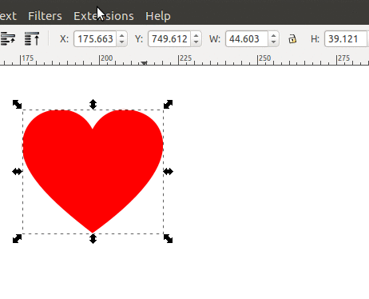
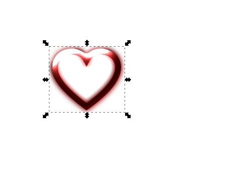
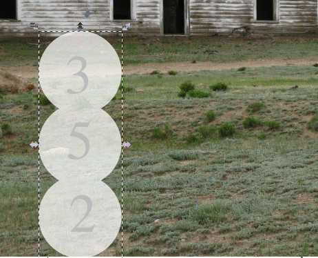

I'm about the opposite of a graphics expert, but I have discovered that by using Inkscape's built-in filters you can very quickly make some basic, initial assets for puzzle games, or UI elements for games of other genres. This is less a tutorial, more just to inspire other artistically-challenged people like me with what can be accomplished with the built-in filters.
First, if don't have Inkscape installed, you should do that now! It's free, and cross-platform, and importantly for me, native on Linux. Inkscape's filter feature is way, way more powerful than I'm using it here... but, baby-steps!
Heart powerup
Here's an example of making a heart icon using the "Glowing Metal" filter:

First I made the icon in a flat way. For example you can use basic geometric shapes such as circles and squares, and then using "Path > Combine" to merge them, or draw using the pen tool and a grid.
Then I tried out some of the filter presets until I got to one I liked, to be used as a heart power-up for a puzzle-game.
For an "unfilled" heart, I just got rid of the fill and just used a stroke on the original effect:

Glass effect
Creating a transparent "glass dome" effect is also useful, great for UI for both puzzle games and others (such as RPGs):

Make a semi-transparent, white shape
Apply the "Smart Jelly" filter
That's all for now, I hope it's useful for someone out there!